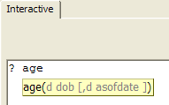
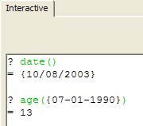
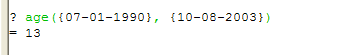
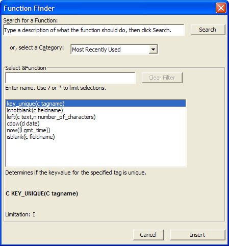
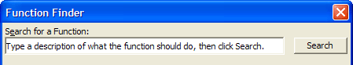
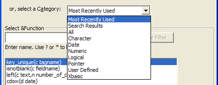
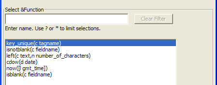
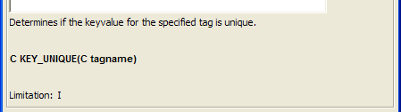

Functions
Early in this book, you saw the following code:
|
date_of_birth = {11/21/1974} age = int((date()- date_of_birth)/365.25) |
used in Xbasic to calculate a person's age. You also learned that a function is a special Xbasic command that optionally takes an input or inputs and produces or "returns" an output. In the code above, the Xbasic command int() is a function. The int() command takes a numeric input and returns the integer portion of that number. The entire expression:
|
(date()- date_of_birth)/365.25 |
evaluates to a number which is the input parameter for the int() function. So, int(24.3) would return the value 24, which is the integer portion of a number. The int() function is classified (simply for reference) as a numeric function since it returns a numeric value.
|
A function is an Xbasic command that processes data (some of which is optionally provided to the function as input parameters) and returns a value for display, assignment to a variable, or incorporation in an expression. |
Alpha Anywhere includes hundreds of built-in functions that can be used in any Xbasic expression or script. These functions allow you to transform data, query tables, load arrays, set values and more. Every new version of Alpha Anywhere includes new functions added to the program's built-in function list that allow you to quickly accomplish tasks that you would normally have to program yourself. The Alpha Anywhere help files group functions in the categories shown in the following table. This is simply a classification to help you understand where to look for a function depending on what you need to do. Chances are there is an Alpha Anywhere function that matches your needs already. For example, the code above is used to calculate a person's age given a date of birth. In fact, Alpha Anywhere already includes a built-in function that returns a person's age. Appropriately enough it is the age() function. In the interactive window, the function definition appears in bubble-help as below:

Figure 60
|
It is not important for you to understand how a function works, only what inputs are required (if any) and what kind of output you can expect from a function. |
You can see that the age function takes two parameters, one of which is optional. The first parameter is a date value (indicated by the 'd') named dob (which stands for date of birth). If you use the age() function with the dob parameter alone, the function returns an age as of the current date. So, in this next example, the date() function is used to verify the current date (the date this example was created) and then the age() function is called with a dob parameter.

Figure 61
So, on October 8, 2003, the age() function reports that a person born on July 1st, 1990 is 13 years old.
Now the second (optional) parameter is also a date value and is named asofdate. Including this parameter has Alpha Five return an age as of the input date as seen here:

Figure 62
Exercise 13 - Using the Function Finder to locate a function
Open the Code Editor.
Open the Interactive window.
Select Interactive > Insert Function. You will see the following window:
Type the word "trim" in the Search for a function box and then press the Search button. (Don't press Enter after typing "trim" or the Function Finder will close.) Alpha Anywhere displays a listing of five functions that include the word "trim" in their definitions.
Highlight the alltrim() function and press the Insert button. The function is copied into the Interactive window.
Change the line
Press Enter. You will see the following:
Close the Interactive window.

Figure 63
The Insert Function command is accessible from different menus depending on what you're working on. If you're in the Interactive window, it's on the Interactive menu. If you're editing a script or function, it's on the Code menu.
The function finder has the following parts:
Search for a Function allows you to type in key words. When you press Search, any functions whose descriptions contain any of the key words are shown in the middle of the screen.

Select a Category allows the following selections:

which then displays the appropriate functions in the middle of the screen.
In Select Function you type in characters that begin the function name and matching functions are displayed in the middle of the screen. (This is just how bubble-help works.)

A description of the highlighted function and the complete syntax of the function is shown below the middle function listing box. The type of value returned by the function is shown before the function name. Picture
{kind=link}

|
alltrim() |
to
|
? alltrim(" this will be trimmed ") + "!" |
In Step 6, while you are editing the line, make use of the Home and End keys to quickly move your cursor to the beginning and end of the line.
|
= "this will be trimmed!" |
Next
See Also
Xbasic Functions and Methods Listed by Type